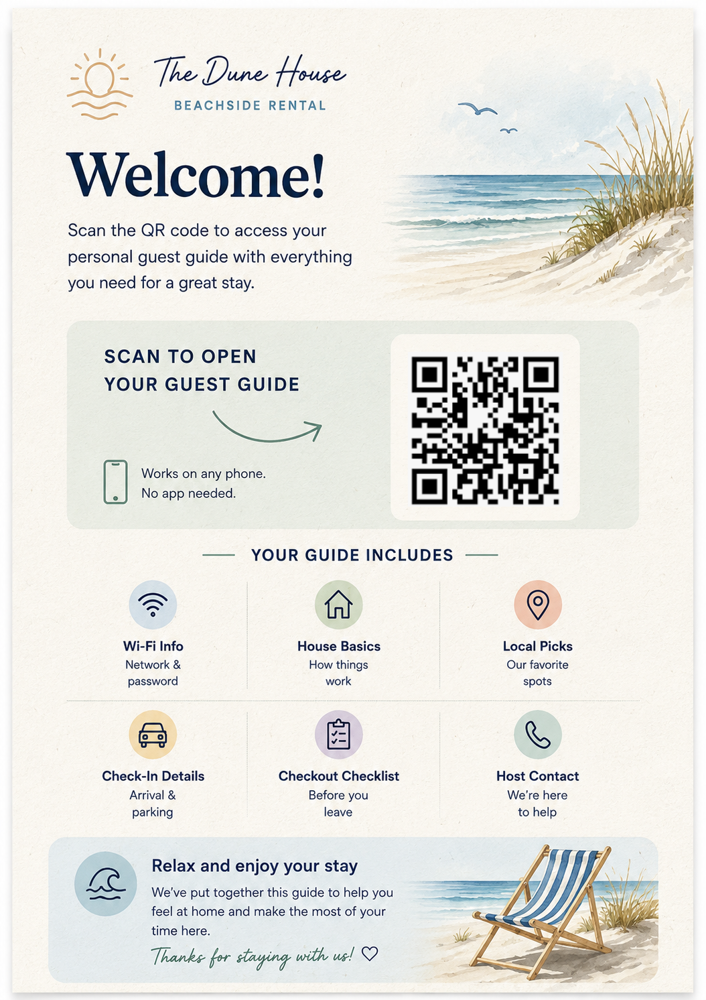
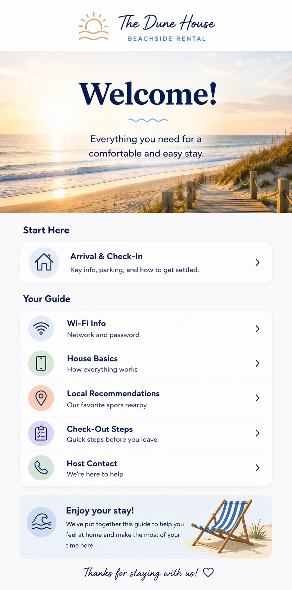

Clear guides for things that take time to explain.
I turn repeated staff instructions and customer questions into clear guides.
Customer Guides
Guides for guests, customers, or visitors who need quick answers on their own.


QR Guest Guide for a Beachside Rental
A sample mobile guide guests open from a QR code inside a vacation rental.
- Problem
- Guests often text the host for the same basic details: Wi-Fi, parking, house instructions, local recommendations, and checkout steps.
- How it works
- A QR card sits inside the rental. Guests scan it and open a polished guide with the most important stay information in one place.
- In the guide
- Wi-Fi Info
- Check-In Details
- House Basics
- Local Picks
- Checkout Checklist
- Host Contact
Role & Task Instructions
Guides for staff, volunteers, interns, or assistants who need a clear way to do the job.
Front Desk Opening Handoff System
A sample Drive package for a small fitness studio's opening shift.
- Problem
- The shift relied on verbal instructions and memory instead of a clear handoff process staff could follow consistently.
- How it works
- Staff follow the guide and checklist, submit the completion form, and report issues when needed. Form responses feed into the manager tracker automatically.
- In the guide
- Checklist
- Completion Form
- Issue Report Form
- Manager Tracker
- Cheat Sheet
- QR Access

Morpheus Drive Guide
A robotics company needed a clearer way to explain a technical component to interns using it inside functional robots.
I worked from walkthrough videos, email notes, phone calls, and client explanations, then organized the material into website-ready guide content formatted for their LMS.
01 Source materials
02 Organized work
03 Final output
The final format depends on what people need to do.
Some projects need a PDF-style guide. Some need website-ready content. Some need a short video walkthrough. Some need a checklist or SOP. The format depends on who will use it and what they need to understand.
- Reference guide
- Step-by-step walkthrough
- SOP
- Checklist
- Training material
- Onboarding doc
- App tutorial
- Short video guide
- Presentation
How it works
-
01
Show me what needs explaining
You can send videos, notes, screenshots, old docs, or just explain the situation.
-
02
I gather context
I ask questions, review the material, and figure out what people actually need to understand.
-
03
I organize the explanation
I turn the information into a clear structure that makes sense to the person using it.
-
04
I make the guide
I create the walkthrough, reference doc, checklist, SOP, tutorial, or training material.
-
05
You review it
You check for accuracy and tell me what needs adjusting.
-
06
I polish the final version
You get a clear guide people can actually use.
Have something people need to understand?
Show me the product, process, app, role, workflow, or explanation you need turned into a guide. I'll help figure out the clearest format and what information we need to make it useful.